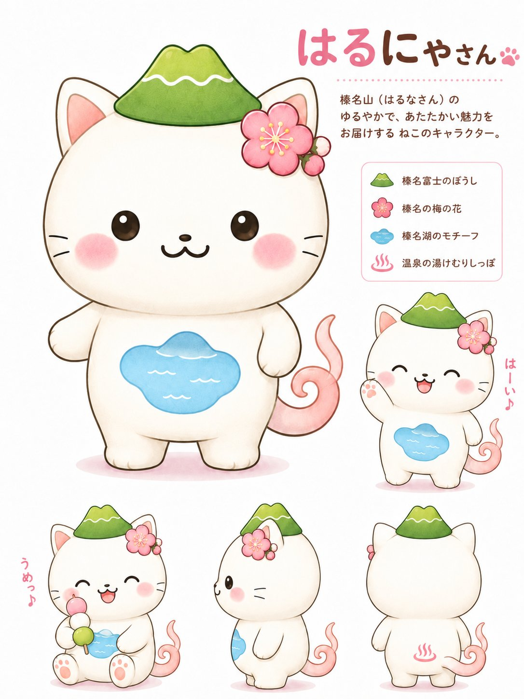

Garden & Plant Notes
植物のことを、やさしく、順番に。
harunami plant base は、植木・家庭菜園・庭づくりの基本を、専門知識のない愛好家にも読みやすく整理する小さな植物サイトです。案内役は、いつもはるにゃさん。植物ホルモンの入門と、黒松の季節管理をそろえて読めるようにしています。
植木
家庭菜園
庭づくり
やさしい解説

「難しい言葉は、まず雰囲気からつかめば大丈夫。育ち方の仕組みがわかると、剪定の見え方がぐっと変わるよ。」
Articles
公開中の記事
トップページから記事へ移動できます